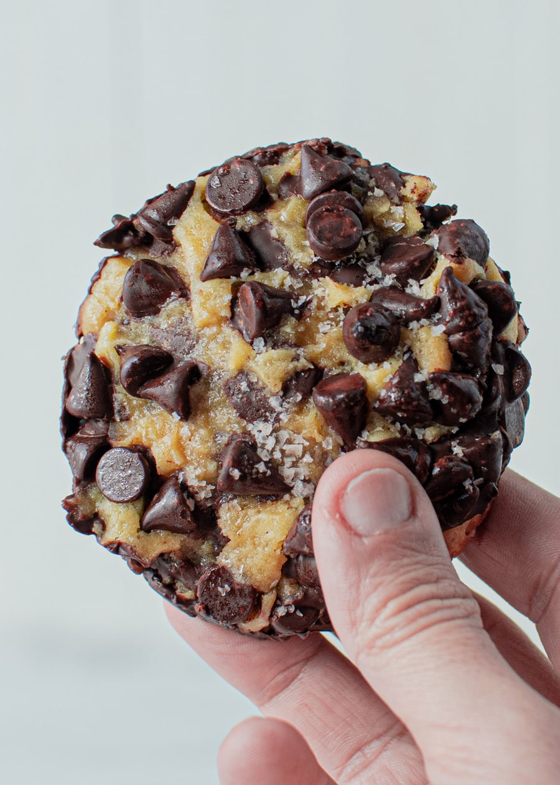

Chocolate_chip

Excellent Oatmeal cookies
- butter
- brown sugar
- eggs
- flour
- Preheat the oven to 325 degrees F (165 degrees C).
- In a large bowl, cream together the butter, brown sugar, and white sugar until smooth. Beat in eggs one at a time, then stir in vanilla. Combine the flour, baking soda, and salt; stir into the creamed mixture until just blended. Mix in the quick oats, walnuts, and chocolate chips. Drop by heaping spoonfuls onto ungreased baking sheets.
- Bake for 12 minutes in the preheated oven. Allow cookies to cool on baking sheet for 5 minutes before transferring to a wire rack to cool completely.